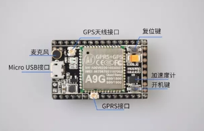

开发板pudding

特征：
- 1个A9G模块（A9和A9G采用相同封装，引脚相同,所以开发板通用）
- 引出模块29个GPIO（包括2个下载调试引脚（
HST_TX,HST_RX） - 1个SIM卡（Micro卡）卡槽(Nano卡<Micro卡<标准卡)
- 1个TF卡卡槽
- 1个GPRS IPEX1代座子
- 1个GPS IPEX1代座子
- 一个USB接口
- 5v-4.2V DC-DC，故可以5v供电或者3.8~4.2V供电
- 1个加速度计LIS3DHx芯片
- 1个开机按键，1个复位按键
- 2个连接到GPIO的LED灯
- 1个麦克风</br>
引脚图